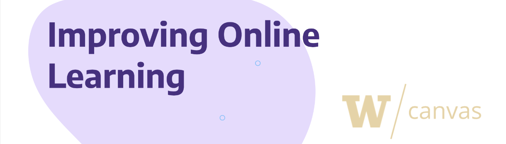
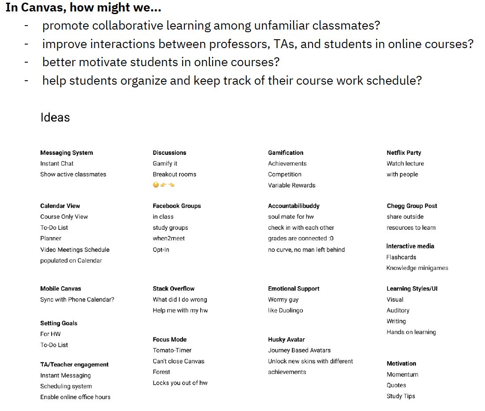
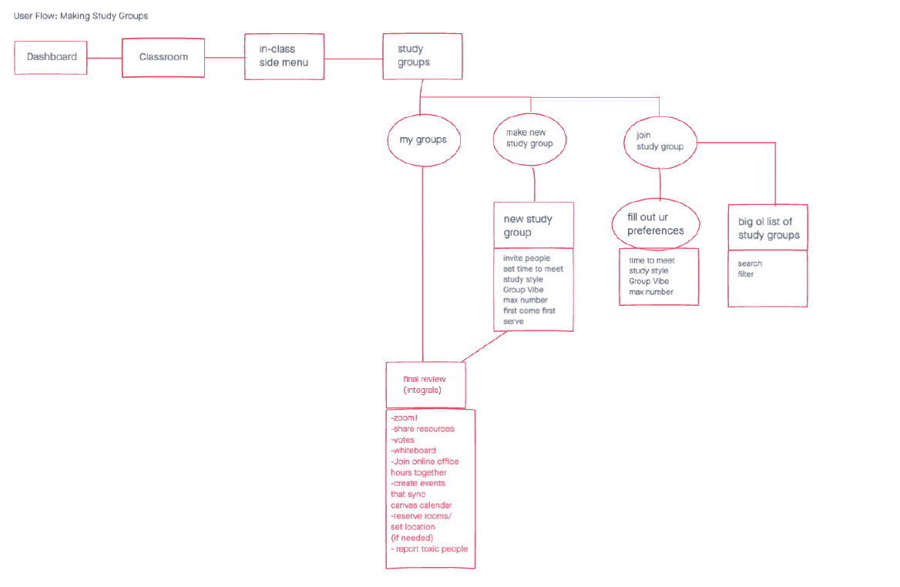
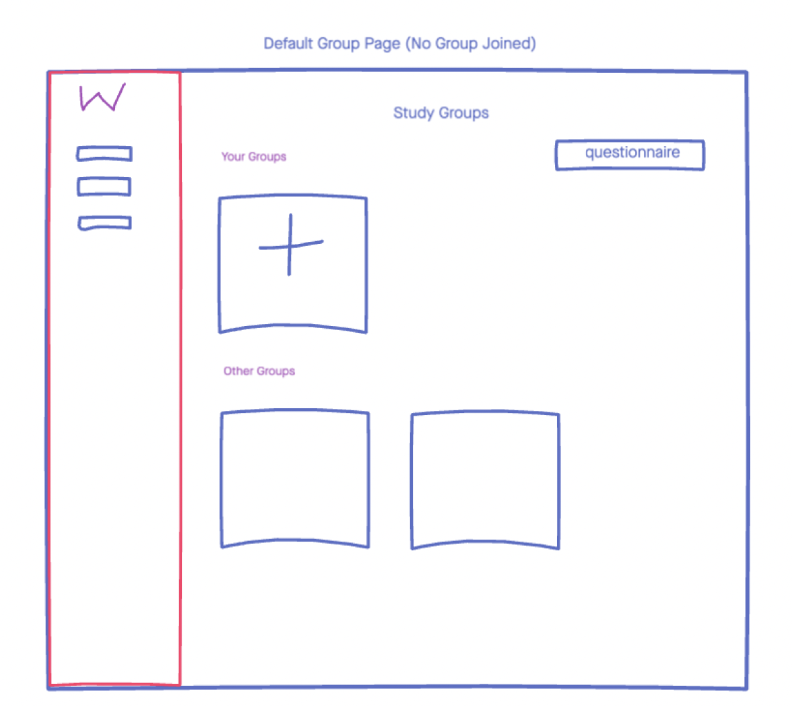
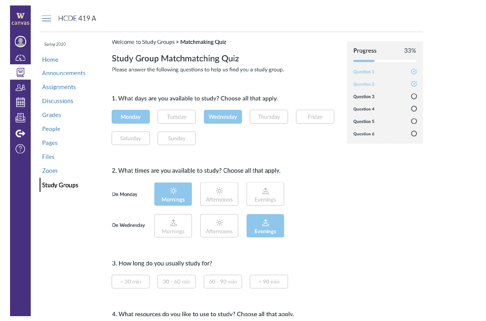
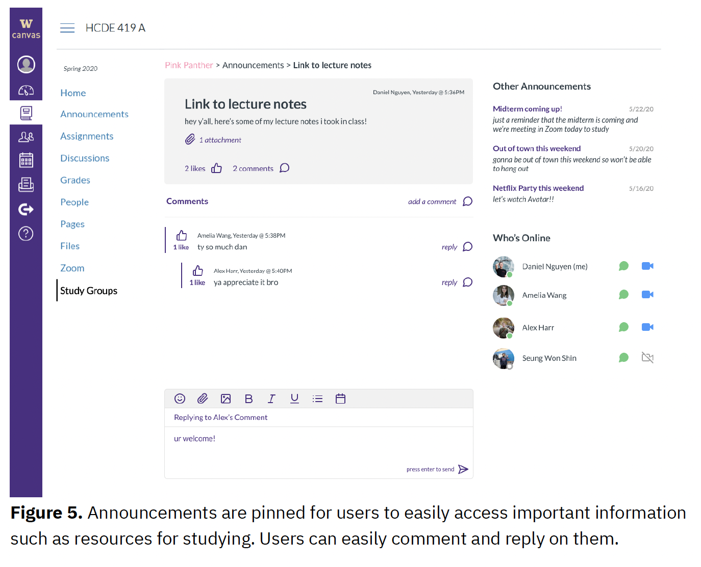

Background
For our project we partnered with UW Continuum College, an organization within UW dedicated to providing educational programs to meet the needs of all types of students. They tasked us with optimizing UW’s current learning management system (LMS), Canvas to better integrate online tools in order to provide a seamless and encouraging learning environment for students. Here, we explore the concept of expanding the scope of Canvas to encompass more than just grades, discussions, and quizzes and actually design learning modules for online course content.
RQ: How can we decrease the cognitive load of students taking online courses through Canvas and design better content learning modules using H5P, an interactive HTML library?
Motivation & User Group
Our work is motivated by the thousands of people who enroll in the UW continuum college’s programs to not only help them create a better opportunity for themselves, but also become lifelong learners. Even though our scope is only on Summer Quarter students, we believe that our designs could have the potential to optimize the learning experience on Canvas, but other Learning Management Systems as well.
Besides our primary motivation, our team has used Canvas for online classes and hope to create a better learning experience for our fellow students through reducing the cognitive load of using multiple integrated tools. From personal experience and research from the UW Continuum College, there is a problem with the integration of software across courses. For example, with multiple modular learning programs such as MasteringPhysics and Aleks, it’s difficult for students to keep track of everything. Students taking both physics and chemistry have to do their online learning on the respective software and keep track of their grades in Canvas. We aim to address this problem space and take a deep dive into how we can improve the overall online learning experience for students.
The primary user group that we have outlined for this project are students enrolled in the Summer Quarter program. Secondary users that we have identified are instructors and instructional designers. The tertiary users would be the vendors and specialists of H5P who help with the integration of H5P within Canvas. Our user groups were defined with assistance from our sponsor, who identified several characteristics of our primary and secondary users.
ResearchFirst, we conducted a brief literature review, which can be found in our project proposal. From this initial research, our team found studies involving LMS metrics and optimization and research on cognitive load for web design, but did not find a research study that combined both topics. With this in mind, our capstone project serves as a new addition to the research space of LMS by examining the cognitive load of such systems with a human-centered approach rather than a metric-based one.

Utilizing insights from our review, we brainstormed potential solutions to solve for key business and user requirements to generate concrete and viable options that we could potentially design for. We will dissect our design requirements and translate them into “How might we” questions. These questions serve as prompts for us to generate as many possibilities to solve for our design requirements. After completing our generative brainstorming sessions, we needed to narrow down our ideas into concrete potential workflows. In order to accomplish this, we utilized our “how might we” questions and voted on the top 5 ideas that were the best prospective solutions as indicated below:
Avatar Based Gamification
General Gamification with achievements/competition/rewards
Instant Messaging
Study Groups
Stack Overflow Q/A
These ideas were then further evaluated through Informal Concept Testing.
From there, we created user flows depicting the major interactions that our user will have within the platform. With our design requirements and potential solutions, we then translated them into three major user flows, first on whiteboards then on Figma. These flows depict the major actions the student undertakes when interacting with the platform and our proposed content modules.
User Testing
We did multiple rounds of user testing, first to understand student experiences with canvas, then to test responses to our ideated concepts, and finally to evaluate our interactive design. Throughout, our partcipant qualifications were:
Participants should be former or current University of Washington (UW) students. Canvas itself is an LMS utilized by many universities, each with customized experiences. For our project, we are looking specifically to understand UW Canvas.
Participants have used Canvas for a college-level course. To gather the most relevant insights, participants need to have experience using Canvas with a college course.
Participants have experience taking an online college-level course. As we sought to evaluate students’ experiences and cognitive load with online learning, it was necessary for students to be experienced in an online course environment.
Findings
We finalized our research findings and successfully presented them to our sponsor. We then moved into the ideation and initial design phases for an exploratory redesign of Canvas. This included a round of informal concept testing to help refine what ideas we developed.
From informal concept testing, our results showed that participants were most interested in seeing us incorporate study groups, instant messaging, and/or stack overflow into canvas. From here, we created user flows for each proposed feature and presented them to our advisor to further refine our scope. From this presentation, we used the feedback to focus on study groups which we designed wireframes for.


Final Study
We conducted moderated remote usability studies. For the usability test, our team crafted a scenario along with guiding tasks and questions based on our objectives. We wanted to explore student’s perspectives of our proposed Canvas feature for study groups. We designed a script with broad tasks and questions for the participants and asked them to explore the feature’s onboarding and main interactions as if they were a student being introduced to it. We designed the usability testing with flexibility as well, giving the moderator and notetakers the option to explore any interesting thoughts or interactions our participants may have expressed.
To qualitatively analyze the data, we grouped feedback from participants based on task. As a team, we approached these tasks as areas of focus for our analysis. We recorded their comments/behaviors for each task into a table to organize and prioritize observations that showed up the most. Finally, we used this table to figure out the level of priority for each issue/behavior that was recorded.
With the results from our testing, we sought to operationalize the feedback into design improvements. As a team, we worked to create a list of changes in our design that would address the feedback we felt was most important. Most of our focus resulted around refining and clarifying content, and keeping a cohesive but refreshed branding. Full list along with all other documents is outlined in our report linked at the bottom of the page.
FINAL MOCKUPS
The high fidelity mockups serve as our final deliverable for our exploratory design of Canvas. Below are some example figures showcasing features of our feature, study groups:


Thank you to UW Continuum College and UW HCDE for your guidance and support! All of our methods, data, and final screens are available in our project proposal and final milestone: